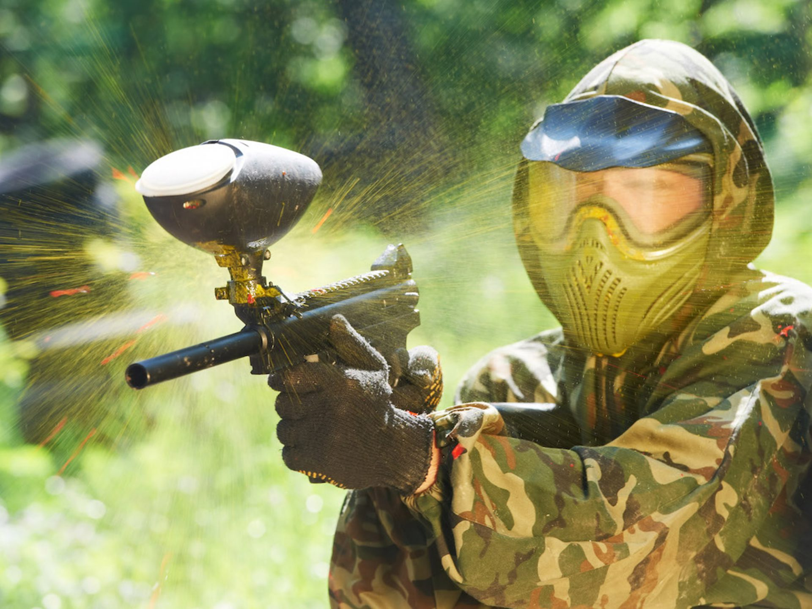

El paintball surge a mediados de los años 70 en Estados Unidos, comenzó como un juego de caza entre dos amigos en un bosque de New Hampshire, inspirados en el libro el juego más peligroso los dos amigos concibieron la idea de crear un juego donde pudieran cazarse uno al otro.
En España podemos encontrar una gama muy variada de campos de paintball, el deporte que en los últimos años ha escalado peldaños como favorito en multitud de países siendo originario éste de Estados Unidos (New Hampshire).